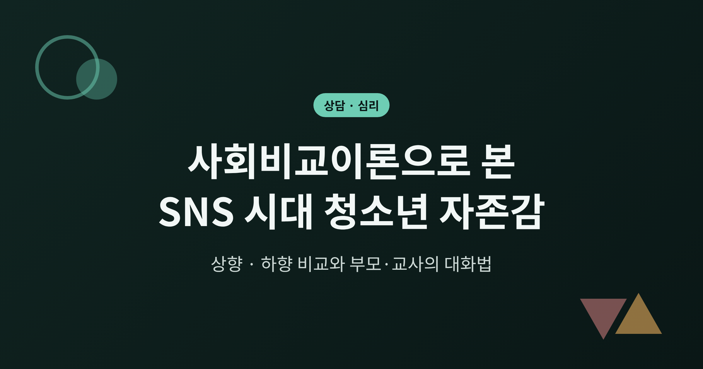
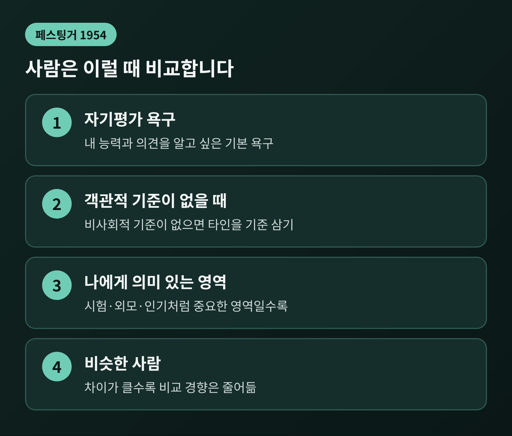
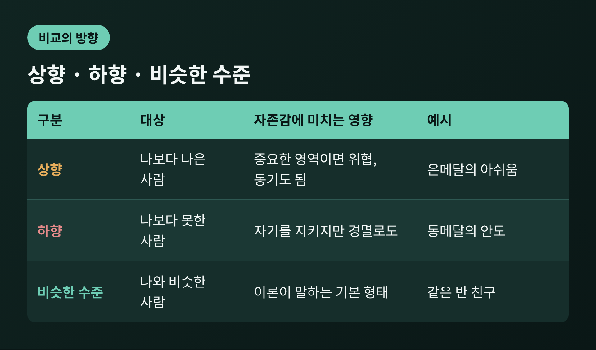
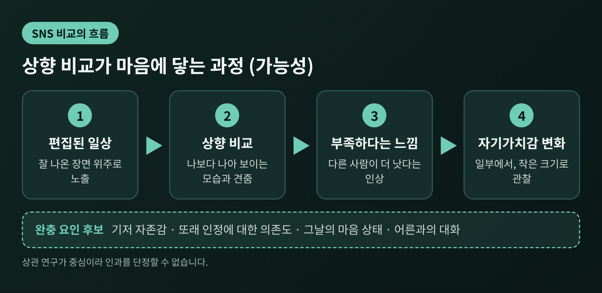
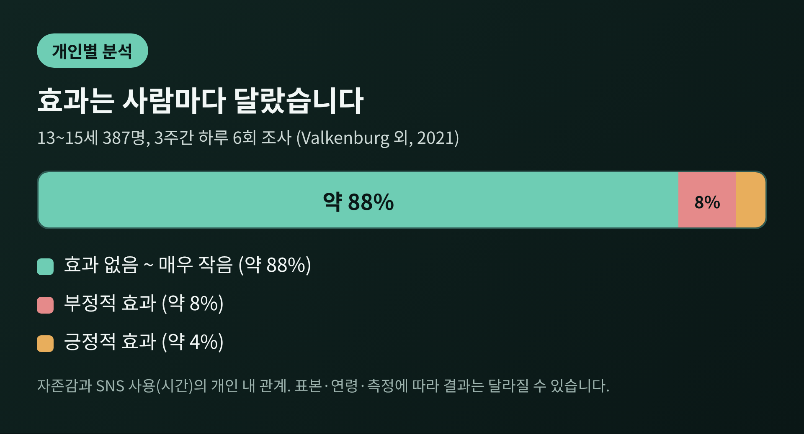
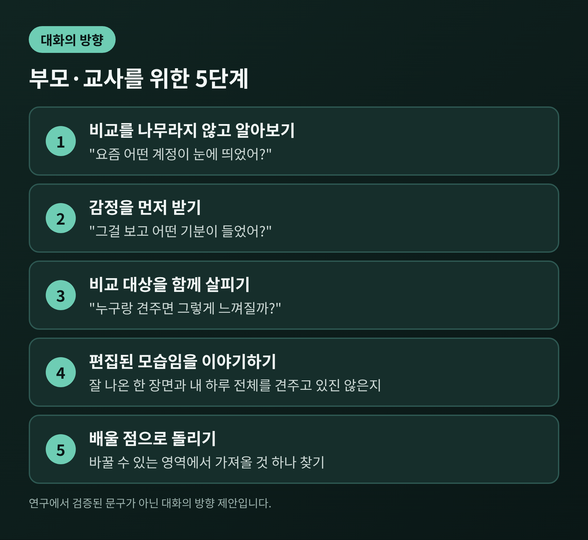

이번 글에서는 1954년 페스팅거가 제안한 사회비교이론을 정리해 보려 합니다. 상향 비교와 하향 비교가 자존감에 어떻게 작용하는지, SNS 연구 결과는 왜 서로 엇갈리는지를 살핍니다. 끝으로 부모와 교사가 청소년과 나눌 수 있는 대화의 방향도 적어 두었습니다.
먼저 핵심만 요약합니다.
사회심리학자 레온 페스팅거는 1954년 이론을 내놓았습니다. 사람에게는 자신의 능력과 의견을 정확히 알고 싶은 기본 욕구가 있다는 것입니다. 객관적인 기준이 없으면, 우리는 다른 사람과 견주어 자신을 평가합니다.
여기에는 조건이 있습니다. 첫째, 그 영역이 나에게 의미 있어야 합니다. 둘째, 비교 대상은 나와 비슷한 사람일 때 가장 활발합니다. 차이가 클수록 비교하려는 경향은 줄어듭니다.
한 가지 더 있습니다. 페스팅거는 능력에 관해서는 "상향의 단방향 추동", 즉 더 잘하려는 압력이 있다고 보았습니다. 의견에는 이런 압력이 대체로 없다고 보았습니다.
학교를 떠올리면 쉽습니다. 시험 점수나 외모, 인기는 늘 비교의 대상이 됩니다. 반면 좋아하는 음악 취향은 다르다고 해서 크게 흔들리지 않습니다.

나보다 나은 사람과 견주는 것이 상향 비교입니다. 나보다 못한 사람과 견주는 것이 하향 비교입니다. 나와 비슷한 수준과 견주는 경우는 흔히 평행 비교라고 부르며, 비슷한 사람을 기준 삼는다는 점에서 이론의 기본 형태에 가깝습니다.
상향 비교는 내게 중요한 영역일수록 자존감을 위협할 수 있습니다. 반대로 나와 무관한 영역에서는 감탄과 존경으로 끝나기도 합니다. 하향 비교는 자기를 지켜 주는 효과가 있습니다. 부작용이 더 심한 환자의 소식을 듣고 안도하는 식입니다. 다만 상대를 얕잡아 보는 경멸로 번질 수도 있습니다.
같은 상황도 어떤 쪽과 견주느냐로 감정이 달라집니다. 올림픽 메달 연구가 대표적입니다. 동메달리스트가 은메달리스트보다 더 행복하다는 결과가 보고되었습니다. 은메달은 금메달을 아깝게 놓쳤다는 상향 비교로, 동메달은 메달권에 들었다는 하향 비교로 이어지기 때문입니다.

비교에는 크게 세 가지 동기가 있습니다. 자기평가, 자기향상, 자기고양입니다.
자기평가는 이론의 핵심입니다. 지금 내 위치가 어디인지 알고 싶은 마음입니다. 자기향상은 더 나아지고 싶은 마음입니다. 이때는 잘하는 사람이 위협이 아니라 자극이 됩니다. 자기고양은 자신을 지키고 싶은 마음입니다. 하향 비교가 여기에 쓰입니다.
그래서 상향 비교가 늘 해롭다고 말할 수는 없습니다. 연구에 따르면 자존감이 높을 때는 상향 비교가 동기와 희망을 더 주었습니다. 최근 좌절을 겪은 직후에는 더 큰 부정적 감정으로 이어졌습니다. 같은 사진을 보아도 그날의 마음 상태에 따라 결과가 달라진다는 뜻입니다.
또 하나, 따라잡을 가능성이 있는지가 중요합니다. 가능성이 있으면 경쟁은 힘이 되고, 없으면 지치게 만듭니다.
SNS는 비교 재료가 끝없이 쏟아지는 공간입니다. 친구들의 성취, 여행, 외모가 하루에도 수십 번 눈앞을 지나갑니다. 그것도 가장 잘 나온 장면 위주로요.
2014년 연구는 이 지점을 보여 주었습니다. Facebook을 자주 쓰는 사람일수록 평소 자존감이 낮았고, 상향 비교에 더 많이 노출된 것이 이를 설명했습니다. 실험에서는 활발한 인맥과 건강한 습관이 드러난 프로필을 본 참가자가, 그렇지 않은 프로필을 본 참가자보다 자존감과 자기평가가 낮았습니다.
2023년 독일의 10~14세 200명 일기 연구도 비슷한 방향입니다. SNS를 많이 쓰는 아이일수록 '다른 사람이 더 낫다'는 인상이 높았습니다. 이 인상은 자기가치감 저하와 연결되었습니다. 다만 같은 아이가 SNS를 많이 쓴 날의 변화는 작았습니다. 저자들은 인과를 단정할 수 없다는 한계도 밝혔습니다.
미국심리학회(APA)의 2023년 권고도 같은 우려를 담고 있습니다. 비교 목적의 SNS 사용을 제한하라고 권하며, 특히 외모 관련 콘텐츠를 짚습니다. 외모 비교는 신체상 불만과 우울 증상과 연관되며 특히 여학생에게서 두드러진다고 합니다.

그렇다고 SNS가 청소년의 자존감을 일괄적으로 떨어뜨린다고 말하기는 어렵습니다. 네덜란드 연구팀은 기존 18개 연구가 '약한 효과와 일관되지 않은 결과'를 냈다고 정리했습니다. 그리고 평균이 아닌 개인별로 살펴보았습니다.
13~15세 387명을 3주간 하루 여섯 번씩 조사한 연구입니다. 약 88%는 SNS 사용의 영향이 없거나 매우 작았습니다. 약 8%는 부정적, 약 4%는 긍정적이었습니다. 다른 연구에서는 SNS에서 겪은 경험의 55%가 긍정적, 18%가 부정적, 27%가 중립적이었습니다. 경험이 자존감에 미치는 영향도 대다수에게는 긍정 방향이었습니다. 저자들은 기저 자존감, 자존감의 불안정성, 또래 인정에 대한 의존도가 차이를 설명할 후보라고 제안했습니다.
수동적으로 SNS를 본 뒤의 기분을 조사한 또 다른 연구에서도 46%는 나아졌고, 44%는 변화가 없었으며, 10%는 나빠졌습니다.
질투를 다룬 검토도 있습니다. 질투가 건강, 운동, 직업 성장 같은 개선의 동기가 될 수 있다는 지적입니다. 한편 SNS 비교, 질투, 우울의 연관을 다룬 체계적 문헌고찰은 대부분 횡단 설계였다는 한계를 밝혔습니다. 우울한 사람이 더 많이 비교하는 것일 수도 있다는 가능성도 남깁니다. 연구들은 대부분 자기보고에 의존했고, 한국 청소년을 대상으로 한 수치는 이 글에서 확인하지 못했습니다.

APA는 SNS가 청소년에게 본질적으로 이롭지도, 해롭지도 않다고 전제합니다. 개인의 특성, 접하는 콘텐츠, 성장 환경에 따라 달라진다는 것입니다. 그렇다면 어른이 할 일은 금지보다 코칭에 가깝습니다. 아래는 이 연구들을 바탕으로 제가 정리한 대화의 방향이며, 연구에서 검증된 문구는 아닙니다.
1. 비교를 나무라지 않고 먼저 알아봅니다.
"그런 거 보지 마"보다 "요즘 어떤 계정이 눈에 띄었어?"가 문을 엽니다. 비교는 인간의 기본 욕구라는 점을 인정하면, 아이도 방어하지 않고 말하기 쉽습니다.
2. 감정을 먼저 받고, 비교 대상을 함께 살핍니다.
"그걸 보고 어떤 기분이 들었어?"에 이어 "누구랑 견주면 그렇게 느껴질까?"를 물어봅니다. 상향인지, 하향인지, 나에게 중요한 영역인지를 아이가 스스로 알아차리게 돕는 과정입니다.
3. 보이는 모습은 편집본임을 이야기합니다.
APA는 이미지가 조작될 수 있음을 알도록 미디어 리터러시를 가르치라고 권합니다. 잘 나온 한 장면과 내 하루 전체를 견주고 있지 않은지 물어볼 수 있습니다.
4. 상향 비교를 '배울 점'으로 돌립니다.
따라잡을 수 있는 영역이라면, 저 사람에게서 가져올 수 있는 것 하나를 찾아보게 합니다. 자기향상 동기로 옮겨 가는 연습입니다. 반대로 바꿀 수 없는 영역(타고난 외모 등)이라면 비교 자체를 줄이는 쪽을 함께 고민합니다.
5. 어른도 자신의 사용 습관을 돌아봅니다.
APA는 어른의 SNS 습관이 아이에게 영향을 준다고 지적합니다. 10~14세 초기 청소년기에는 콘텐츠를 함께 보고 이야기하는 모니터링을, 이후에는 연령에 맞게 자율성을 넓히라고 권합니다. 명확한 한계와 지속적인 대화를 함께 쓰는 방식이 좋은 결과와 연관된다는 예비 연구가 있습니다.

수면, 학업, 친구 관계 같은 일상이 눈에 띄게 흔들리거나, 며칠을 넘겨 우울감과 무기력이 이어진다면 어른의 대화만으로 감당하려 하지 않으시길 권합니다. APA도 일상을 방해하는 문제적 사용을 살피라고 안내합니다. 자해나 섭식에 관한 이야기가 나온다면 더욱 그렇습니다. 학교 상담 선생님이나 지역 청소년상담복지센터, 정신건강 전문가와 상의하시기 바랍니다. 이 글은 일반적인 정보이며, 개별 아이의 상태를 진단하거나 치료를 대신하지 않습니다.
정리하면 이렇습니다. 비교는 막을 수 없고, 막을 필요도 없는 마음의 작용입니다. 다만 무엇과, 왜 견주는지에 따라 같은 비교가 자극이 되기도 위협이 되기도 합니다.
"비교를 없애려 하지 말고, 비교하는 마음을 함께 읽어 주세요."
내 아이의 화면 속에는 어떤 사람들이 있을까요. 오늘 저녁, 그 화면을 꾸짖지 않고 궁금해하는 마음으로 한번 들여다보시길 권합니다.